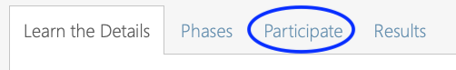
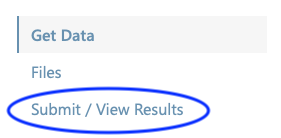
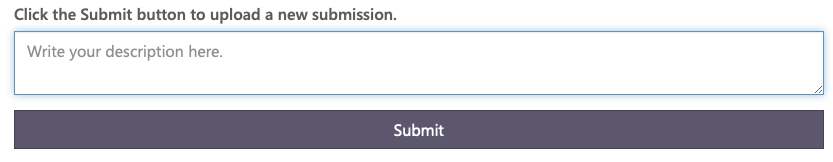
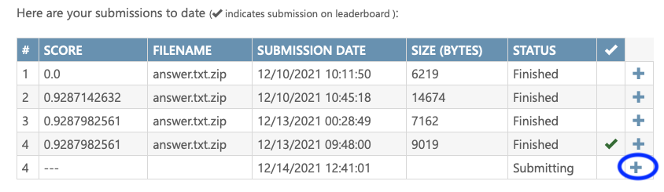
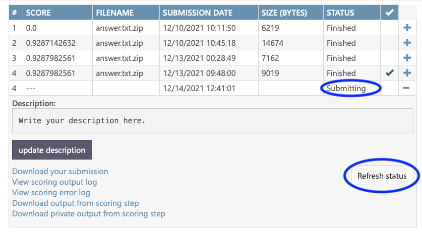
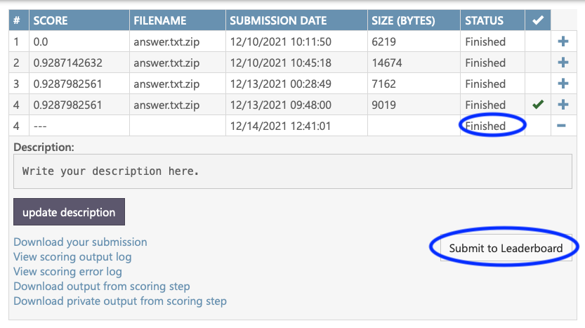

First, go to the challenge page. Next, click on the 'Participate' tab.

Next, click on 'Submit / View Results.'

Then, write a short system description and click on the 'Submit' button.

You're not done yet! You will see a list of your submissions and their statuses. The last one in the list is the one you just submitted. Click on the '+' button if it's not already expanded.

The status will show as 'Submitting.' Click on 'Refresh status' to check it again.

Once the status shows as 'Finished,' click on 'Submit to leaderboard.' Now you're done!
